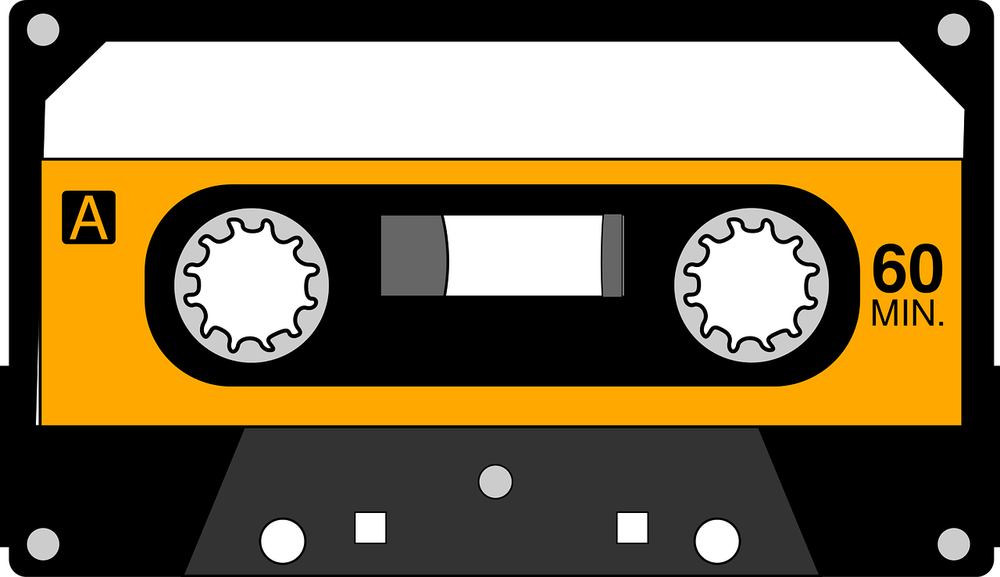

Features in development:
Proprietary Equalizer
Most other companies don't understand the use of equalizers. They don't recognise that everyone is different, and they especially don't realize that those differences are important. At equalizer, we value our customers for their differences. Thus, we provide every one of our listeners with a powerful, easy-to-use equalizer.
Rating System and Algorithm
The Equalizer rating system has many parts, all working together to give you the best listening experience. When you rate a song or artist, our algorithm takes notice, works some patented analytical magic, and gives you personalized recommendations. That means listening to more of what you love, and none of what you hate.
Fan/Artist Interactions
Equalizer encourages interactions between fans and artists. We want people to be able to react to music together and share new findings. Look forward to an in-app messaging system and the possibility for artists to reach out to their Superfans directly. Artists will also be able to promote shows and new music on their artist's page.
Musician's Corner
Beginner: you have uploaded at least 5 songs to Equalizer
Beginner's Badge:

Musician: you have 1,000 monthly listeners on Equalizer
Musician's Badge:
Artist: you have 100,000 monthly listeners on Equalizer
Artist's Badge:

- Chance to be featured in one of Equalizer's promotions
Trend Setter: you have 1,000,000 monthly listeners on Equalizer
- Ability to design your artist's page
- Significantly higher chance to be featured in one of Equalizer's promotions
SuperStar: you have 10,000,000 or higher monthly listeners on Equalizer
- Ability to design your artist's page
- Able to reserve a day in the year to be the cover star of the website and background of the home screen of the app with a link to your personal website and music.
Pricing:
Free: The 3 Band Club
- Limited to 3 downloads a month of all songs listed as "Demo" by the artist.
- Ads every 5 songs while streaming.
- Limited skips: 5 per day.
Paid: The 8 Band Club
- Download any songs in Equalizer
- No ads while listening.
- Access to the recommendation algorithm
- Unlimited Skips
Testamonials:
- "Honestly the best new program out there."
- Sino Soydal - "I have no idea how they created those algorithms. Seriously amazing stuff."
- Al Gorrith, MS - "So happy to see my flock branch out and create such awesome systems."
- Cardi Nyall